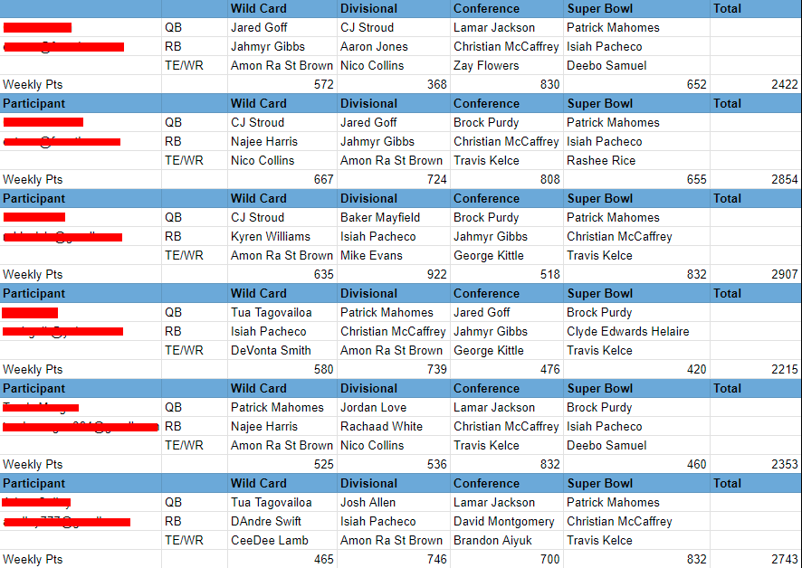
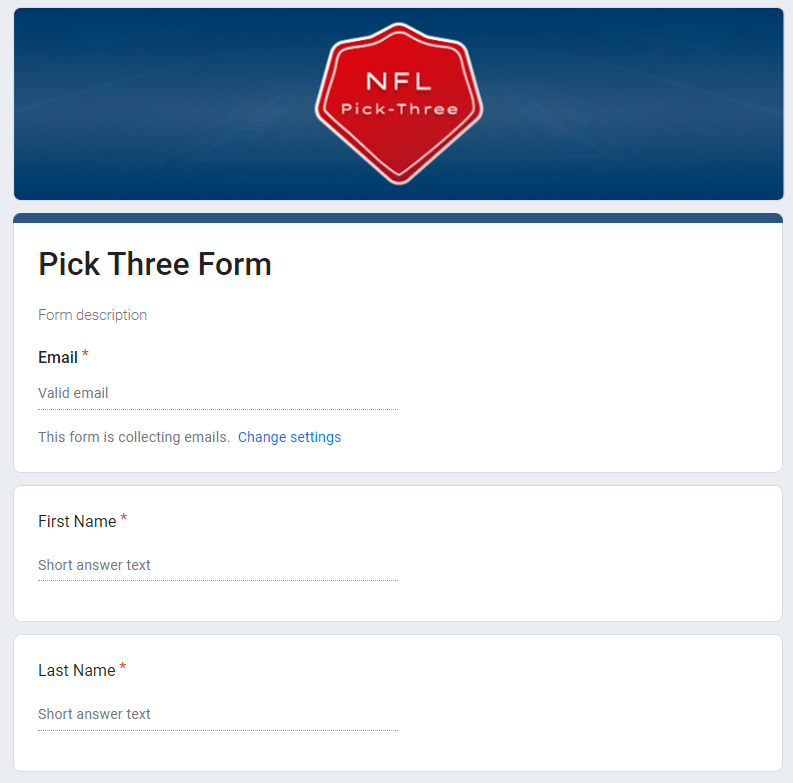

Fantasy Football Automation
In discussions with an acquaintance, I discovered he spent a significant amount of time managing a fantasy football league. This involved manually inputting participants' information and calculating their scores after each game—a tedious and time-intensive task. Determined to streamline this process, I spoke with him to identify the best approach for automation.
At the outset of the project, I established two primary design objectives:
- Automate as much of the workflow as possible while ensuring usability for individuals with no programming knowledge.
- Maintain the capability for manual inputs
These goals guided my decisions throughout the project.
During the conceptualization phase, I explored methods for participants to submit their picks and have them automatically uploaded into a spreadsheet. Drawing from my past experience with Google Forms, which could interact with Google Sheets, I delved into research on Google Apps Script—a modified version of JavaScript tailored for customizing this connection.
 